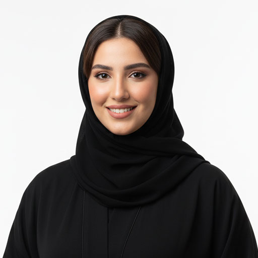
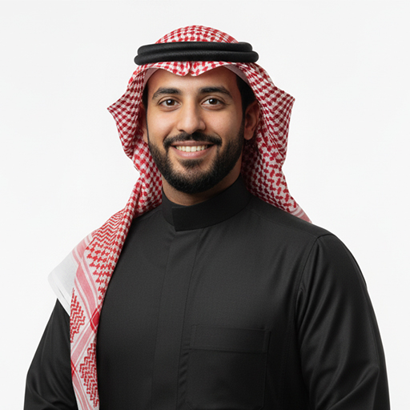

الأعضاء
أعضاء المجلس

أ. محمد بن عوض الجابر
عضو مجلس الإدارة

د. بدر بن علي العقل
عضو مجلس الإدارة

أ. محمد بن عبد الله الدوسري
عضو مجلس الإدارة

م. خالد بن مزروق السعد
عضو مجلس الإدارة

م. حسين بن حماد الحماد
عضو مجلس الإدارة

أ. محمد بن خلف الشمري
عضو مجلس الإدارة
أ. خالد بن عبد الرحمن الجبر
عضو مجلس الإدارة
د. أحمد بن محمد الرفاعي
عضو مجلس الإدارة
د. محمد بن عبد الله الحصيني
عضو مجلس الإدارة
م. عبد الرحمن بن سلطان العرفج
عضو مجلس الإدارة